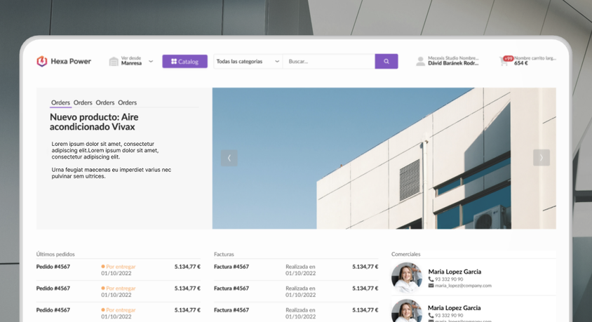
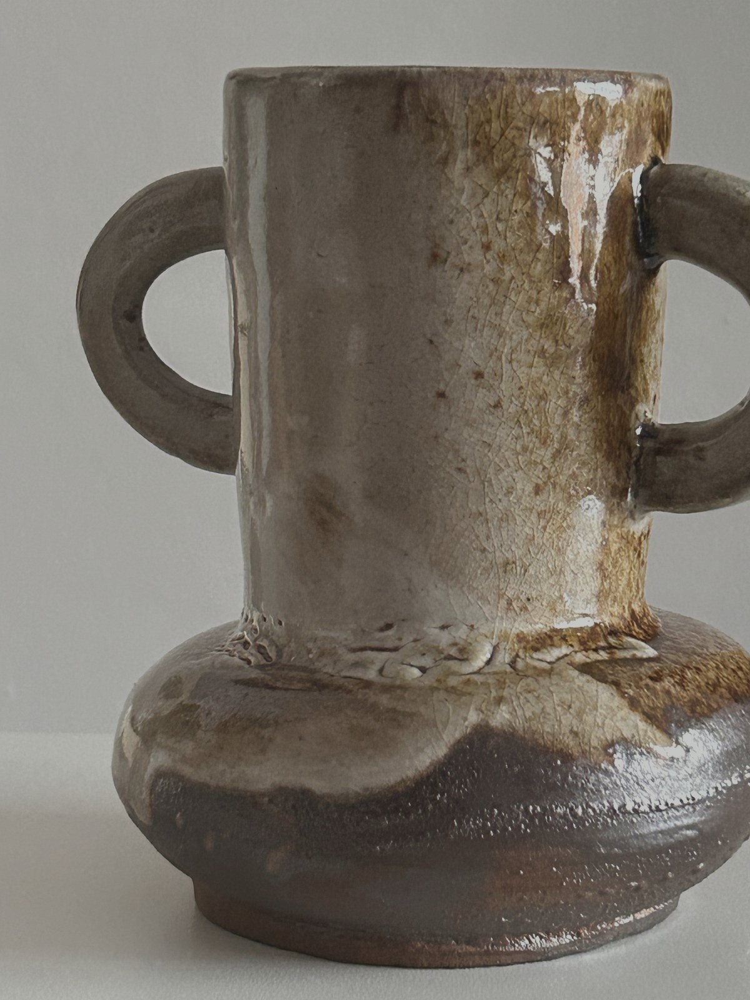

Clay.
As a UX/UI designer by trade, I'm passionate about blending form, function, and beauty. This ceramics project is an extension of my creative process — a hands-on exploration of materiality, design, and human connection. It reflects my love for research, my curiosity about tactile experiences, and my drive to craft meaningful, expressive work.